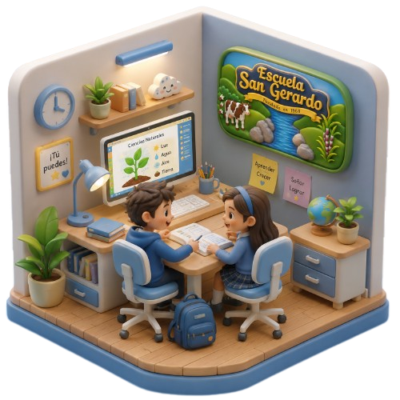

POR Y PARA LA COMUNIDAD
Escuela
San Gerardo
Centro educativo ubicado en Ciudad Quesada, San Carlos, comprometido con el aprendizaje, la formación integral y el desarrollo de sus estudiantes.
Contactar
INFORMACIÓN INSTITUCIONAL
Una institución al servicio de la niñez sancarleña
La Escuela San Gerardo es un centro educativo público ubicado en Ciudad Quesada, perteneciente al Circuito 14, con código institucional 1630.
- Ciudad Quesada
- San Carlos
- Circuito 14
- Código 1630
- Centro educativo público
UBICACIÓN Y CONTACTO
Comunicación directa con la institución
Ciudad Quesada, San Carlos
Correo: esc.sangerardo.sancarlos@mep.go.cr
Teléfono: 2460-5236
COMUNIDAD Y COLABORACIÓN
Vinculación con la comunidad
La Escuela San Gerardo abre espacios para personas, estudiantes e instituciones interesadas en apoyar mediante voluntariados, Trabajo Comunal Universitario, proyectos educativos o iniciativas de impacto social.
Para conocer oportunidades de colaboración, puede comunicarse directamente con la institución.
Solicitar informaciónHorario de atención
Lunes a viernes — 7:00 a. m. a 5:00 p. m.